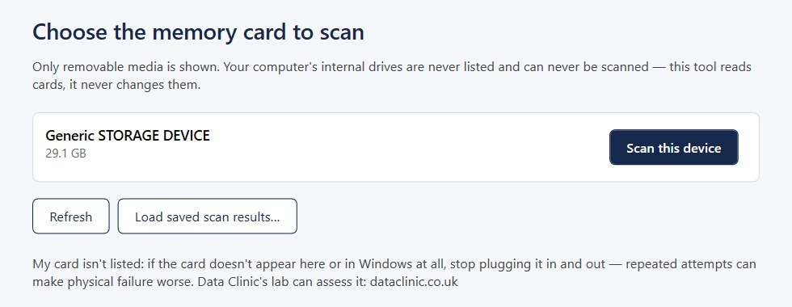
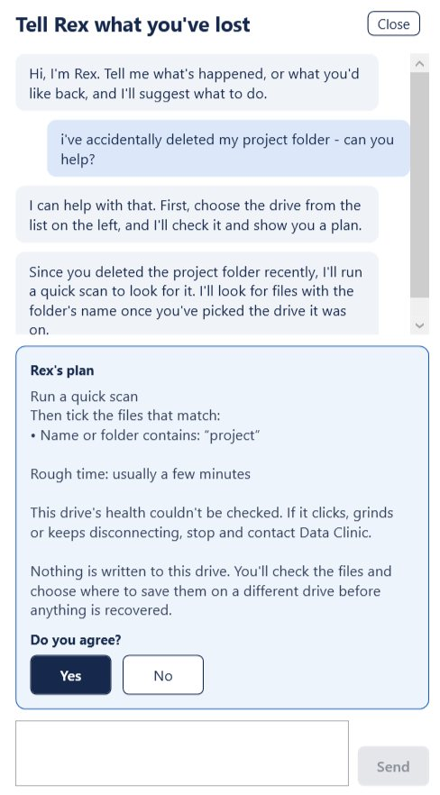
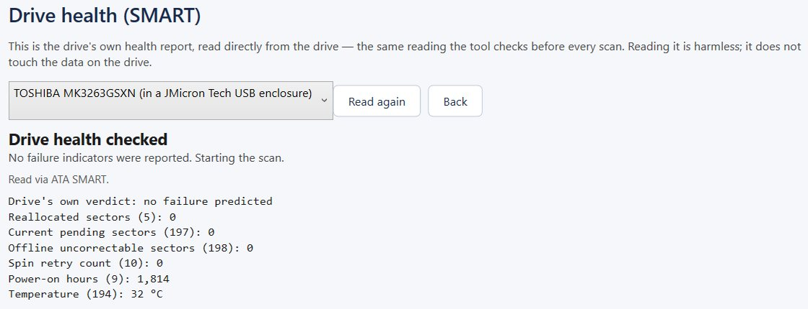

Windows data recovery software
Get your lost files back. See them before you pay.
Data Clinic Recovery for Hard Drives finds deleted and lost files on hard drives, SSDs and USB sticks. It was written by a data recovery lab, so it knows when to stop — and the scan and preview are free.
Windows 10/11 (64-bit) · version 1.1.1 · licences from £39.99 — shown in your currency at checkout

Our software
Recovery tools built by a recovery lab
Every Data Clinic program is written by engineers who recover data professionally — read-only, honest about the limits, and free to try.
Recovery for Hard Drives
Deleted, formatted and lost files from hard drives, SSDs and USB sticks — with Ask Rex AI, health checks and drive imaging.
Explore →
Memory Card Recovery
Deleted photos and videos from SD and microSD cards — free, no registration, with previews before you save.
Explore →What it recovers
When the drive works but the files are gone
Deleted by mistake, formatted, or a drive Windows suddenly can't read — if the drive itself still works, this is where to start.
Deleted files
Shift+Delete, an emptied Recycle Bin, a folder gone missing — found with their original names and folders wherever the drive's file tables still list them.
Formatted drives
A deep scan reads the whole drive and recognises dozens of file types by their content — photos, video, music, documents, email and archives.
"You need to format the disk"
Drives showing as RAW, or with a damaged file system, can usually be read without formatting — and the files copied off safely.
Mac drives on a Windows PC
Reads Mac APFS, HFS+ and HFS drives that Windows can't open, and copies the files off — no Mac needed.
External drives and USB sticks
External hard drives, SSDs and USB memory sticks, plus internal drives other than the one Windows runs from.
Drives showing early trouble
Copy a struggling drive to an image file once, then recover from the copy — so a weak drive isn't read again and again.
Ask Rex AI · new in version 1.1
Just say what you've lost
Press Ask Rex AI and describe it the way you'd tell a person — "my deleted folder called Dave", "all my photos from last summer", "Windows says my drive needs formatting and I'm scared".
- Rex explains what's probably wrong and proposes a plan — which scan to run and which files to pick.
- Nothing starts until you press Yes. Rex never presses anything himself.
- The software checks every plan against its own safety rules — a failing drive gets no plan at all.
- Off until you turn it on. Your files, their contents and the list of file names are never sent.
Free for planning and scanning within a daily limit. Powered by Claude, Anthropic's AI model; not offered where Anthropic's service isn't available.


Built by a recovery lab
Software that knows when to stop
Most recovery software will happily scan a dying drive until it's beyond saving. Ours was written by the engineers at Data Clinic, a data recovery lab working since 2002 — so it behaves the way they would.
- Health check first. It reads the drive's own health report before anything is scanned, and refuses to scan a drive that reports failure.
- Strictly read-only. It never writes to, repairs or formats the drive it scans, and won't let you save files back onto it.
- Honest verdicts. Every file shows whether it can really be recovered before you pay — files that are gone are marked as gone.
Pricing
Scan and preview free. Pay only to recover.
Every licence includes everything the software does.
Find out what's recoverable — free
Download, scan and preview without paying anything. Windows 10 or 11, 64-bit.
Download free